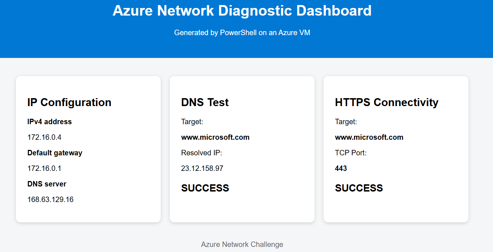
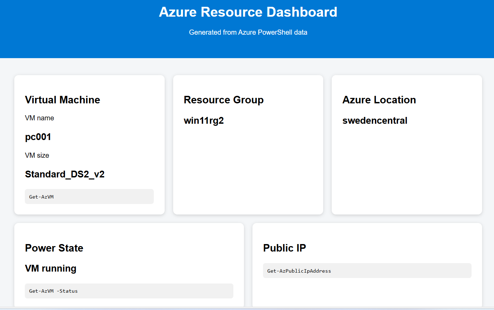

4. hét – Hálózatok és hálózati biztonság az Azure-ban
A VM-től a hálózatig – diagnosztika, IIS, NSG és két webes dashboard
A negyedik heti gyakorlaton egy Windows 11 Azure VM hálózati működését vizsgáljuk meg két nézőpontból. Először a virtuális gép operációs rendszerében végzünk IP-, DNS- és TCP-diagnosztikát, majd ezekből egy egyszerű webes dashboardot készítünk. Ezután a saját számítógépünkről, Azure PowerShell segítségével lekérdezzük a VM Azure-erőforrásadatait, és egy második dashboardot hozunk létre.
Esetleírás – Két nézőpont ugyanarról az Azure VM-ről
Egy vállalat egy Windows 11 virtuális gépet üzemeltet a Microsoft Azure-ban. A rendszergazdák két egyszerű webes állapotoldalt szeretnének ugyanazon a VM-en:
- a Network Diagnostic Dashboard a VM operációs rendszerének nézőpontjából mutassa az IP-konfigurációt, a DNS-feloldást és egy TCP-kapcsolat tesztjét;
- az Azure Resource Dashboard az Azure control plane nézőpontjából mutassa a VM nevét, erőforráscsoportját, régióját, méretét, állapotát és nyilvános IP-címét.
A két dashboard ugyanazon az IIS webkiszolgálón fut, de különböző TCP-portokon:
Network Diagnostic Dashboard → TCP/80
Azure Resource Dashboard → TCP/8080A feladat során azt is megvizsgálod, hogy miért nem elég egy szolgáltatásnak csak a VM-en működnie: a külső eléréshez az Azure NSG és szükség esetén a Windows Defender Firewall megfelelő szabályaira is szükség van.
A feladatok váltakozva futnak a saját számítógépeden és az Azure VM-en. Minden feladat elején külön megadjuk a Hely, Eszköz és AI információt. Parancs futtatása előtt mindig ellenőrizd ezeket.
Minta – Network Diagnostic Dashboard

1. ábra – Példa a Network Diagnostic Dashboardra. A megjelenés csak minta; a szükséges adatok és működés a fontos.
Minta – Azure Resource Dashboard

2. ábra – Példa az Azure Resource Dashboardra. A megjelenés csak minta; nem szükséges pixelpontosan lemásolni.
Az AI használható, sőt több feladatban kifejezetten ajánlott. A cél azonban nem egy teljes megoldás vakon történő generáltatása. Először kérdezd meg, melyik parancs alkalmas egy adott információ lekérdezésére, futtasd és ellenőrizd a parancsot, értelmezd az eredményt, és csak ezután kérd az AI-tól a már kipróbált parancsok scriptbe vagy dashboardba szervezését. Az AI által készített kódot futtatás előtt olvasd át.
A feladatokat sorrendben végezd el. A válaszmezők tartalmát a böngésző ezen a gépen automatikusan megőrzi.
A gyakorlat végén add meg a Neptun-kódodat, majd válaszd a Beadás gombot. Jelszót vagy más hitelesítési adatot ne írj a munkafüzetbe.
I. Azure nézőpont – saját számítógép
1. feladat – Az Azure VM elindítása
Hely: Saját számítógép
Eszköz: VS Code → PowerShell Terminal
AI: nem szükséges
Jelentkezz be az Azure-ba, majd a korábban tanult Azure PowerShell-parancsokkal indítsd el a saját virtuális gépedet, és ellenőrizd az állapotát. Add meg a ténylegesen használt, megfelelően paraméterezett parancsokat.
Ha a virtuális gép legalább két próbálkozás után sem indul el, az Azure Portalon méretezd át egy másik, az adott régióban rendelkezésre álló VM-méretre, majd próbáld meg újra elindítani.
2. feladat – A VM Azure-erőforrásadatainak lekérdezése
Hely: Saját számítógép
Eszköz: VS Code → PowerShell Terminal
AI: nem szükséges
Kérdezd le Azure PowerShellből a VM nevét, erőforráscsoportját, régióját és futási állapotát.
Indulj ki a Get-AzVM parancsból, és használd a -Status kapcsolót. A VM-et kiválaszthatod közvetlenül például a -Name paraméterrel, vagy használhatsz szűrést (Where-Object). A megjelenített adatokat Select-Object segítségével szűkítheted.
Hasznos property-k: Name, ResourceGroupName, Location, PowerState
3. feladat – Azure hálózati adatok lekérdezése
Hely: Saját számítógép
Eszköz: VS Code → PowerShell Terminal
AI: nem szükséges
Azure PowerShell segítségével keresd meg a VM-hez tartozó nyilvános IP-címet és hálózati interfészt (NIC).
A publikus IP-címhez használd a Get-AzPublicIpAddress, a hálózati interfészhez a Get-AzNetworkInterface parancsot. A keresést szűkítheted a -ResourceGroupName paraméterrel. Hasznos property-k: IpAddress, Name. A megjelenítést Select-Object segítségével is szűkítheted.
4. feladat – Kapcsolódás a virtuális géphez
Hely: Saját számítógép
Eszköz: VS Code → PowerShell Terminal, majd Remote Desktop Connection
AI: nem szükséges
Mielőtt RDP-vel kapcsolódsz, teszteld a VM nyilvános IP-címének TCP/3389 portját. Ha a teszt sikeres, kapcsolódj RDP-vel a VM-hez.
Használd a Test-NetConnection parancsot. Add meg célként a VM publikus IP-címét, a -Port paraméterrel pedig az RDP 3389-es TCP-portját. Figyeld a TcpTestSucceeded értékét.
Hasznos elemek: Test-NetConnection · -Port · 3389 · TcpTestSucceeded
II. Guest OS nézőpont – Azure VM
5. feladat – IIS webkiszolgáló engedélyezése
Hely: Azure VM
Eszköz: RDP → Windows PowerShell rendszergazdaként
AI: nem szükséges
Nyisd meg a Start menüt, keress rá a Windows PowerShell alkalmazásra, majd jobb egérgomb → Run as administrator / Futtatás rendszergazdaként. Ha megjelenik a UAC ablak, válaszd a Yes / Igen lehetőséget. A címsorban az Administrator: Windows PowerShell felirat jelzi a rendszergazdai módot.
Ellenőrizd az IIS-WebServerRole állapotát a Get-WindowsOptionalFeature paranccsal, majd a W3SVC szolgáltatást a Get-Service -Name ... paranccsal.
Ha az IIS-WebServerRole nincs engedélyezve, futtasd:
Enable-WindowsOptionalFeature -Online -FeatureName IIS-WebServerRole -All -NoRestartEzután ellenőrizd újra az IIS állapotát. Ezt az opcionális engedélyező parancsot nem kell beadnod.
Végül futtasd a megadott HTTP-tesztet:
(Invoke-WebRequest http://localhost -UseBasicParsing).StatusCode6. feladat – IP-konfiguráció vizsgálata
Hely: Azure VM
Eszköz: RDP → Windows PowerShell
AI: nem szükséges
A Get-NetIPConfiguration segítségével vizsgáld meg, mit lát a Windows a VM hálózati konfigurációjából. Jegyezd fel a privát IPv4-címet, az alapértelmezett átjárót és a DNS-szervert.
A megjelenített adatokat Select-Object segítségével szűkítheted.
Hasznos property-k: InterfaceAlias, IPv4Address, IPv4DefaultGateway, DNSServer
7. feladat – DNS-diagnosztika
Hely: Azure VM
Eszköz: RDP → Windows PowerShell
AI: nem szükséges
A Resolve-DnsName segítségével oldd fel a www.microsoft.com nevet. Vizsgáld meg, milyen IP-címet kapsz vissza.
Hasznos elemek: Resolve-DnsName · www.microsoft.com · IPAddress
8. feladat – TCP-port diagnosztika
Hely: Azure VM
Eszköz: RDP → Windows PowerShell
AI: nem szükséges
A Test-NetConnection segítségével ellenőrizd, hogy a VM képes-e TCP-kapcsolatot létrehozni a www.microsoft.com 443-as portjára.
Hasznos elemek: Test-NetConnection · www.microsoft.com · -Port · 443 · RemoteAddress · TcpTestSucceeded
9. feladat – Network Diagnostic Dashboard készítése AI segítségével
Hely: Azure VM
Eszköz: RDP → Windows PowerShell ISE
AI: használható és ajánlott
A VM-en nyisd meg a Start menüt, keress rá a Windows PowerShell ISE alkalmazásra, majd indítsd el rendszergazdaként. A felső szerkesztőablakban írhatod és mentheted a .ps1 scriptet, az alsó konzolban pedig futtathatod és tesztelheted a parancsokat.
Most már három külön parancsot kipróbáltál: Get-NetIPConfiguration, Resolve-DnsName és Test-NetConnection. Kérd meg az AI-t, hogy ezekből készítsen egy paraméterezhető PowerShell scriptet, amely HTML-oldalt generál az IIS alapértelmezett webhelyére.
A script neve legyen network-dashboard.ps1, és legalább a következőket jelenítse meg:
- privát IPv4-cím, alapértelmezett átjáró és DNS-szerver;
- a megadott célgép DNS-feloldásának eredménye;
- a megadott TCP-port kapcsolatának eredménye.
A célgép és a port legyen paraméter, például Target és Port. A teszthez választhatsz tetszőleges, értelmes célgépet. Futtatás előtt olvasd át az AI által készített scriptet, majd mentsd el (Ctrl+S), futtasd, és ellenőrizd a létrehozott oldalt. Böngészőben is ellenőrizd, hogy a dashboard adatai megfelelnek-e a 6–8. feladat eredményeinek.
Az AI első megoldása nem feltétlenül működik azonnal. Ha hibát kapsz, másold ki a teljes hibaüzenetet, add vissza az AI-nak, és kérd meg, hogy javítsa a kódot a hiba alapján. Ezután futtasd újra és ellenőrizd az eredményt.
Ne csak azt írd, hogy „nem működik”: a hibaüzenet alapján az AI pontosabban tud javítani.
Mintaprompt: „Az általad készített PowerShell-kód az alábbi hibát adja. Javítsd úgy, hogy Windows PowerShellben is működjön: [hibaüzenet]”
III. Külső elérés és Azure hálózati védelem
10. feladat – A Network Dashboard külső tesztje
Hely: Azure VM, majd saját számítógép
Eszköz: PowerShell mindkét gépen
AI: nem szükséges
Először a VM-en ellenőrizd a 80-as portot localhost címmel. Ezután a saját számítógépedről teszteld a VM nyilvános IP-címének 80-as portját.
Használd a Test-NetConnection parancsot, a -Port paraméterrel a 80-as TCP-portot, és figyeld a TcpTestSucceeded értékét.
Hasznos elemek: Test-NetConnection · localhost · publikus IP-cím · -Port 80 · TcpTestSucceeded
Az első tesztet a VM-en, a másodikat a saját számítógépeden futtasd.
11. feladat – NSG-szabály a Network Dashboardhoz
Hely: Saját számítógép
Eszköz: Azure Portal + VS Code → PowerShell Terminal + böngésző
AI: használható
Ha a 80-as port kívülről nem érhető el, az Azure Portalon hozz létre olyan Inbound NSG szabályt, amely a saját nyilvános IP-címedről engedélyezi a TCP/80 forgalmat. Ne nyisd meg szükségtelenül az egész internet felé.
Az Azure Portalon nyisd meg a VM-et → Hálózati beállítások (Networking / Network settings) → Portszabály létrehozása (Create port rule) → Bejövő portszabály (Inbound port rule).
- Source: saját publikus IP-címed (
/32) - Source port ranges:
* - Destination:
Any - Service:
HTTP - Destination port:
80 - Protocol:
TCP - Action:
Allow - Priority: például
310 - Name: például
Allow-HTTP-MyIP
Ezután ismételd meg a külső Test-NetConnection tesztet, majd böngészőből nyisd meg a Network Diagnostic Dashboardot.
IV. Azure Resource Dashboard
12. feladat – Azure Resource Dashboard készítése
Hely: Saját számítógép, majd Azure VM
Eszköz: VS Code → PowerShell Terminal, AI, RDP
AI: használható és ajánlott
Térj vissza a 2–3. feladatban külön-külön kipróbált Azure PowerShell-parancsokhoz. Kérd meg az AI-t, hogy ezekből készítsen olyan PowerShell scriptet, amely létrehoz egy azure-dashboard.html fájlt.
A dashboard jelenítse meg legalább:
- VM name;
- Resource Group;
- Azure Location;
- VM size;
- Power State;
- Public IP.
A létrehozott HTML-fájlt másold át RDP-n keresztül a VM-re.
13. feladat – Második IIS-webhely létrehozása a 8080-as porton
Hely: Azure VM
Eszköz: RDP → Windows PowerShell rendszergazdaként
AI: használható
Hozd létre a C:\inetpub\azure-dashboard könyvtárat, és helyezd el benne az előző feladatban elkészített HTML-oldalt index.html néven. A WebAdministration modul és a New-Website segítségével hozz létre egy második IIS-webhelyet AzureDashboard néven a 8080-as porton.
Ellenőrizd a webhelyet a VM-en localhost:8080 címmel.
Használd a Test-NetConnection parancsot. Célként add meg a localhost értéket, a -Port paraméterrel pedig a 8080-as portot. Figyeld a TcpTestSucceeded értékét.
Hasznos elemek: Test-NetConnection · localhost · -Port · 8080 · TcpTestSucceeded
14. feladat – A 8080-as port hibakeresése
Hely: Saját számítógép és Azure VM
Eszköz: VS Code → PowerShell Terminal, Azure Portal, RDP → Administrator PowerShell
AI: használható és ajánlott
A saját számítógépedről teszteld a VM nyilvános IP-címének 8080-as portját. Használd a 13. feladatban már alkalmazott Test-NetConnection parancsot, de localhost helyett a VM publikus IP-címét add meg, a port pedig legyen 8080.
- NSG-szabály: a 11. feladatban megismert módon hozz létre új bejövő szabályt. Most a
80helyett a8080célportot engedélyezd, továbbra is csak a saját publikus IP-címedről (/32). - Teszteld újra: használd ismét a
Test-NetConnectionparancsot a VM publikus IP-címével és a-Port 8080paraméterrel. - Ha továbbra sem érhető el, kérj az AI-tól hibakeresési javaslatot. Vizsgáld meg a Windows Defender Firewall szerepét.
- Szükség esetén hozz létre Windows Firewall inbound szabályt a TCP/8080 portra.
- Végső ellenőrzés: futtasd újra a
Test-NetConnectionparancsot a saját számítógépeden, a VM publikus IP-címére és a8080-as portra. ATcpTestSucceededértékének ekkor márTrueértéket kell mutatnia. Ezután nyisd meg böngészőben az Azure Resource Dashboardot.
Az IIS működése, az Azure NSG engedélyezése és a Windows Firewall engedélyezése három külön ellenőrzési pont. Attól, hogy localhost:8080 működik, a szolgáltatás még nem feltétlenül érhető el az internetről.
V. Lezárás
15. feladat – A virtuális gép leállítása
Hely: Saját számítógép
Eszköz: VS Code → PowerShell Terminal
AI: nem szükséges
Azure PowerShell használatával állítsd le a gyakorlat során használt saját virtuális gépedet. A VM-et úgy állítsd le, hogy az Azure-ban is felszabadításra kerüljön (deallocated állapot). Ezután ellenőrizd a végső állapotot.
A heti gyakorlat kiegészítéseként ajánlott elvégezni a következő Skillable labort:
AZ-900 – Implement a Network Security Group
A labor jó lehetőséget ad az ezen a héten megismert Network Security Group (NSG) és hálózati biztonsági szabályok további gyakorlására.
Mentés és beadás
Beadási határidő: 2026. október 15. 11:40
Beadás előtti összesítés
A munkafüzet kísérleti jelleggel becsült aktív időt és feladatonkénti szerkesztési eseményeket is rögzíthet. Ez nem pontos munkaidőmérés: a másik böngészőlapon, VS Code-ban vagy RDP-ben végzett munka nem feltétlenül számít aktív időnek.
Időmérés: –
Eseménykövetés: –
Becsült aktív idő: 0:00
Szerkesztési események: 0
Első megnyitás: –
Utolsó aktivitás: –